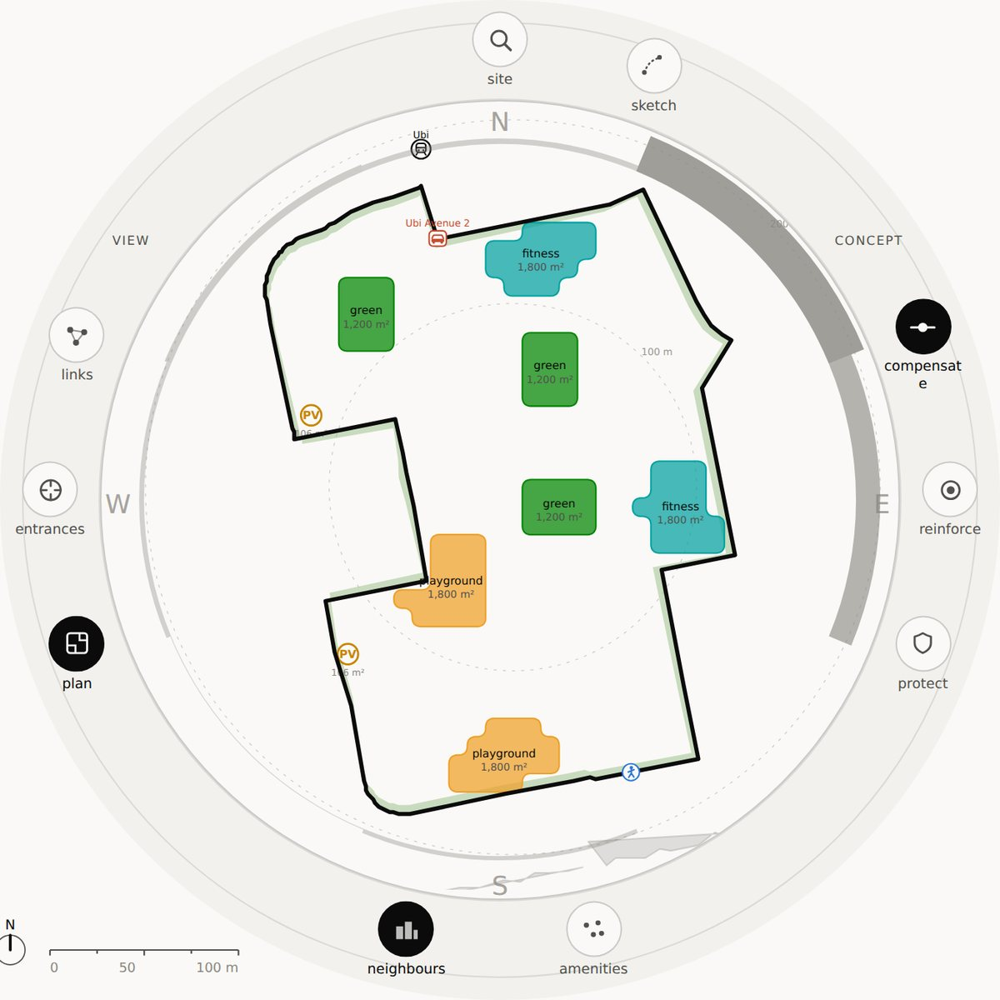

Groundwork reads the problem, works through what it allows, and hands the designer suggestions: a trade-off, a conflict, a stress test, a gap. The design stays theirs.
Every suggestion comes with its reasons — what it costs, what it buys, where it was measured — and every reason can be checked.
North–south, from the station.
The suggestions follow you from the masterplan to the block to the detail; and vice versa.

Another parcel returns a different set.
Shaded on the plan: how far the public front reaches in from the NE 70 m and N 30 m.
footprint · unit mix
frontage · storeys
footprint · unit mix
Designers select plans that capture preferences, and these create new plans.
20 of the 200 frontage samples read PARK — 120 m of the 1,201 m boundary. The bend is turned at it.
Scroll back up and change the spine. The louvre changes, because the façade did.
Groundwork 500 runs today on Singapore parcels: pick a site, watch the sweep, read the concepts it finds and the ones it cannot name. 50 is in early access on request, and 5 is being built behind it.
Open the demo groundwork-lilac.vercel.app
One drawing, one viewBox, animated against scroll — not an image sequence, so
detail resolves rather than being revealed. Geometry is schematic and stands in for real
exports. Figures are measured: parcel numbers from the Ubi sweep. No archive plan geometry is shown.